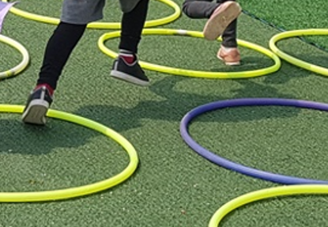

아동의 환경과 현대사회의 적응에 필요한 상담의 의의
현대사회는 교통과 통신이 빠르고 정신없이 변화하는 특징을 갖고 있다. 이렇게 숨가쁜 사회에서 부모들의 변화에 의해 아동들은 자신도 모르게 희생자로서 좌절하고 불안을 느끼고 끊임없는 긴장상태에 빠진다. 아동들이 신체적, 정신적으로 준비되기도 전에 물리적, 사회적으로 성인이 되도록 압력을 받는다. 이러한 현실에 비추어볼때 현대사회에서 아동들은 자신이 스스로 처한 환경과 스트레스 상황에 효과적으로 대처해 나갈 수 있는 아동을 위한 상담의 필요성이 절실하다.

아동의 부적응 문제의 치료적 욕구 증가
사회가 급변하고 가정내 양육환경 및 학교내에서의 다양한 교육환경의 변화는 아동의 성장발달과정에 있어 여러 가지 영향을 끼치고 있다. 실제로 아동들은 부모의 직장과 학군에 의해 새로운 지역으로 이사, 부모의 불화와 별거, 재혼, 이혼, 아동에 대한 과잉간섭, 학대와 방임, 약물과 알코올에 노출, 학교 등교거부, 학교 부적응에 따른 중퇴 및 퇴학, 심각한 정서장애 등으로 스트레스가 가중되고 있다. 즉, 아동들의 사회, 정서적인 발달과정에 있어 학교부적응, 또래관계의 어려움, 사회성결여, 이상행동, 발달지연 등의 문제가 초래되고 있다,
정서,발달장애 아동들의 정서적인 문제로 부적응을 경험할 경우 심리적 환경개선과 부적응을 해소해야 한다. 아울러 사회적, 정서적, 인지적 측면에 있어서 발달상의 어려움을 가진 경우 중복장애문제의 문제로 인해 언어치료 및 심리치료, 인지교육등 다양한 상담, 치료교육 프로그램을 실시할 수요는 매우 다양하게 증가한다.
아동상담에 있어서 가족의 체계적인 구조와 밀접성
아동문제는 아동개인의 문제로 국한되는 것이 아니라, 가족의 사회적체계와 밀접한 관련이 있다. 아동기는 일상생활 및 대인관계의 제한된 자원에서 심리적으로 장애자녀가 가족구성원이 된 상황을 불안과 고통, 좌절 및 상실감을 수반하는 상황으로 인식하는 가정도 적지 않다.
이러한 연쇄적인 가족간 갈등과 스트레스의 파급은 결과적으로 아동에게 부정적인 영향을 미쳐 아동학대나 유기로 연결될 수 있다. 즉, 아동의 발달문제, 치료교육 환경, 부모와 아동간의 정서적 불일치, 부모의 양육문제와 가족간의 갈등, 빈곤 등은 상호 관련성을 가지고 내재적으로 구조화되는 특성을 보인다.
특히, 장애자녀를 위한 치료는 가계경제에 부담을 줄뿐 아니라, 자원이 부족한 상태에 부모가 장애아동을 돌보느라 경제활동에 참여하지 못한데서 비롯되는 실업문제와 경제적 어려움은 또다른 복합적인 문제를 야기하게 된다. 일반적으로 보편적으로 성장한 아동보다 장애문제를 가지고 있을 경우, 부모는 심각한 양육문제와 갈등에 직면하게 된다. 그뿐만 아니라 친인척관계, 사회적 격리감, 그밖에 학교학습 문제와 또래관계, 여가활동 등에서 매우 다양한 문제를 양상시킨다.
아동상담을 위한 지침
1) 감정과 좌절을 이야기할 때 민감하게 상호작용해야 한다.
2) 아이들은 언어 외 종종 비언어적으로 의사소통을 한다.
3) 가정에서 아이들을 관찰하는 것을 이야기를 하도록 안내한다.
4) 인형 및 모래놀이하기, 그림 등 여러가지 매체 이용할 때 정보와 문제를 파악한다.
5) 아동들이 자신의 걱정과 관심을 솔직하게 나타내도록 이끌어준다,
6) 무엇이 아동에게 행복과 불행하게 하는지 살펴본다.
7) 아동이 재미있거나 가장 슬픈 일은 무엇인지 이해한다.
그 외 아동상담에서는 아동에게 잠재적으로 대답을 암시하는 질문을 하는 것도 좋다. 아동 상담하는데 있어 상담자는 반드시 친절하면서도 엄격해야 한다. 아동 상담은 훈련, 놀이치료, 조직적인 대화, 강화를 주거나 보류하는 것 등을 포함할 수 있다. 이 모든 것들을 행하면서 아동의 감정에는 욕구와 불안, 갈등이 내재된 사람이라는 사실을 명심해야 한다.
아동들의 감수성과 감정이입, 온정, 사려성과 존경을 갖고 다루어야만 한다. 또한 아동상담은 언제나 부모 상담과 함께 이루어져 한다. 따라서 아동에 대한 문제와 상담은 그 아동이 잠재적으로 지니고 있는 발달 차원 뿐 아니라 가족 환경, 지역상황, 주변의 또래친구 등까지 포괄적, 통합적으로 파악해야 효율적으로 발휘하게 된다.
2022.02.13 - [분류 전체보기] - 브론펜브레너의 생태학적 체계 이론 -아동 환경의 5가지
브론펜브레너의 생태학적 체계 이론 -아동 환경의 5가지
브론펜브레너의 생애 및 사상 브론펜브레너(Urie Bronfenbrenner, 1917~2005)는 1917년에 러시아의 모스크바에서 출생했으나 6세 때 미국으로 이주하여 미국에서 살았다. 그는 1938년 음악과 심리학을 이중
think-sis.co.kr